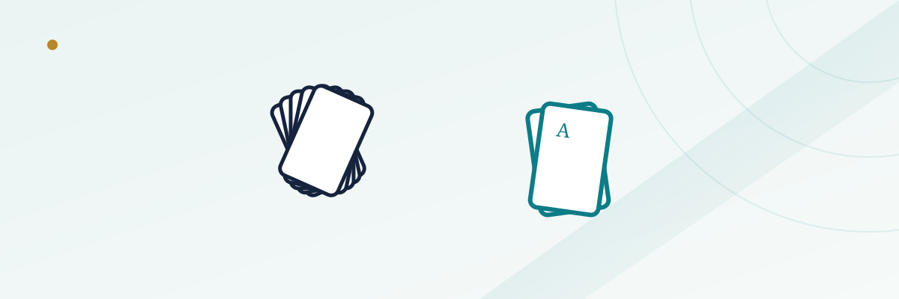

Pai Gow Poker Basics: Setting Hands, Banking, and the House Edge

Pai Gow Poker moves slower than almost anything else on the table-games floor, and that's exactly the point for a lot of the players who seek it out. You're dealt seven cards, you split them into two separate poker hands, and both of those hands have to beat the dealer's two hands for you to win the bet outright. It's a game built around ties, pushes, and a house edge low enough that it draws grinders looking to make their bankroll last as long as possible — provided you understand what "setting" a hand actually means.
In this guide
- The basic structure: seven cards, two hands
- The joker: a wild card with one restriction
- How a hand gets settled against the dealer
- The house way: how the dealer's hand gets set
- Basic strategy for setting your own hand
- Banking: when you play the house's role
- Why the push rate makes the house edge look smaller than it is
- Common mistakes new players make
The basic structure: seven cards, two hands
Pai Gow Poker is played with a standard 52-card deck plus one joker, dealt from a table of up to six players plus the dealer. Each player receives seven cards and must arrange them into two hands: a five-card hand, commonly called the "high hand," and a two-card hand, called the "low hand" or "front hand." The only structural rule is that the five-card hand must rank higher than the two-card hand using standard poker hand rankings — you can't set a stronger hand in the front than in the back. Beyond that one constraint, how you split the seven cards is entirely up to you, which is what makes Pai Gow Poker a genuine strategy game rather than a pure luck bet.
The two-card hand can only ever be a pair or a high card, since there aren't enough cards for anything more complex. That simplicity is deceptive — deciding which pair or which high cards to keep in front, versus building the strongest possible five-card hand in back, is where most of the game's actual decision-making lives.
The joker: a wild card with one restriction
The single joker in a Pai Gow Poker deck is only partially wild. It can substitute for any card to complete a straight, a flush, or a straight flush, and it always counts as an ace in every other situation, including as a kicker or as part of a pair. This makes the joker meaningfully weaker than a fully wild card would be — it can't be used to make five of a kind, for instance, since it always defaults to being an ace rather than becoming whatever rank you'd need. Knowing this restriction matters when you're deciding how to build your two hands, since a joker in your seven cards is often, though not always, best used to complete your strongest available straight or flush in the five-card hand.
How a hand gets settled against the dealer
After every player sets their two hands, the dealer reveals their own seven cards, which are arranged according to a fixed set of rules called the house way (more on that below, since it matters if you ever bank the game). Each player's high hand is then compared against the dealer's high hand, and each player's low hand is compared against the dealer's low hand — two separate comparisons per player, both settled independently.
To win money on the hand, a player must beat the dealer on both the high hand and the low hand. Winning one and losing the other results in a push — no money changes hands on that bet at all, regardless of which hand won and which lost. Losing both hands loses the full bet. This two-way comparison structure, and the frequency of split results, is the single biggest thing that separates Pai Gow Poker from every other table game on the floor.
The house way: how the dealer's hand gets set
The dealer doesn't get to make strategic decisions the way a player does. Instead, the dealer's seven cards are arranged according to a predetermined set of rules known as the house way, which every casino publishes and which dealers are required to follow exactly, hand after hand, with no judgment calls. The house way is designed to set a reasonably strong, consistent hand without needing a trained strategist behind the table for every round.
Here's the detail that matters most for players: house way rules are publicly available at every casino that spreads the game, usually printed on a card near the table or available on request, and studying them is directly useful for your own hand-setting decisions. If you know how the dealer's hand will typically be arranged in a given situation, you can set your own two hands specifically to beat that pattern rather than guessing at what "feels" strong.
Basic strategy for setting your own hand
The core principle behind good Pai Gow Poker strategy is straightforward even though the specific card-by-card decisions can get detailed: maximize your chance of winning both hands, not just one. A common beginner mistake is stacking every strong card into the five-card hand and leaving a weak two-card hand behind, which can win big on the high hand but push or lose on the low hand far more often than necessary.
A few widely-cited guidelines that hold up under closer analysis: with two pair, generally split them into one pair in front and one pair in back rather than keeping both pairs together in the five-card hand, unless one of the pairs is aces (aces are strong enough in the two-card hand to be worth breaking up from a second, weaker pair). With three of a kind, keep it intact in the five-card hand rather than breaking it into a pair-plus-single, except when the three of a kind is a low rank and doing so leaves you with a genuinely weak front hand — in which case splitting one of the three off as a strong-enough two-card hand can be correct. With a full house, splitting the three-of-a-kind portion into the front as a pair, and using the pair portion plus your best remaining card in back, is frequently the mathematically stronger play, since it strengthens a hand that would otherwise be the weaker of your two.
| Hand you're dealt | General strategy guideline |
|---|---|
| Two pair (neither is aces) | Usually split — one pair front, one pair back |
| Two pair, one pair is aces | Often keep both pairs in back; play aces alone up front |
| Three of a kind | Usually keep intact in the five-card hand |
| Full house | Often split into a pair front, pair-plus-kicker back |
| Straight or flush with an extra pair | Depends on rank — compare against the house way |
These guidelines cover the most common situations, but a full Pai Gow Poker strategy chart runs considerably longer and accounts for specific rank combinations. Players serious about minimizing the house edge typically study a complete house-way-based strategy chart rather than relying on general rules of thumb alone, similar to how blackjack basic strategy covers exact plays for every hand rather than broad guidelines.
Banking: when you play the house's role
One of Pai Gow Poker's more unusual features is that players are periodically offered the chance to bank the game themselves, taking on the house's role for that hand. When you bank, every other player at the table (and the casino itself, in most house-banked formats) bets against you instead of against the dealer, and you're responsible for covering all winning bets out of your own funds if you have enough capital at the table to do so.
Banking shifts the math meaningfully in the banker's favor, because ties on the banker's own hands resolve in the banker's favor rather than as a push — the reverse of how a player's tie against a house-banked dealer works. This is genuinely one of the better edges available on a casino floor for a player with enough bankroll to cover the table, though it requires enough capital on hand to bank every other player's bet, which puts it out of reach for a lot of recreational bankrolls even when the opportunity is offered.
Why the push rate makes the house edge look smaller than it is
Pai Gow Poker's house edge, commonly cited around 1.5% to 2.5% depending on the exact commission structure and strategy used, sounds competitive with some of the best bets in the casino. But that number is calculated relative to total money wagered, and Pai Gow Poker pushes an unusually large share of hands — commonly estimated around 40% or more of all hands played, since splitting one hand win and one hand loss is common with two independent comparisons happening on every round.
That high push rate means your bankroll moves very slowly in either direction. A low house edge combined with a high push rate is why Pai Gow Poker is often recommended to players who want to stretch a limited bankroll across a long session at the table, more than it's recommended to players chasing fast, large swings. It's a different kind of casino math than a game like craps, where a comparable house edge on the pass line translates into a much faster-moving bankroll because pushes are rare.
Common mistakes new players make
The most frequent mistake is over-stacking the five-card hand with every good card and leaving a genuinely weak two-card hand behind, which increases the odds of a push or an outright loss on that half of the bet. A second is ignoring the posted house way entirely and setting hands purely by instinct, missing the chance to specifically counter how the dealer's hand will be built. A third is misunderstanding the joker's limited wildness and assuming it can form combinations it can't, like five of a kind. And a fourth, more structural mistake is expecting Pai Gow Poker to move at the pace of blackjack or baccarat — the two-hand comparison process, and the frequent need for the dealer to walk through the house way by hand, makes for a noticeably slower game, which is a feature for bankroll-conscious players and a drawback for anyone looking for fast action.
Frequently asked questions
What happens if I win my five-card hand but lose my two-card hand?
The bet pushes. You must win both the high hand and the low hand against the dealer to win money on that round; a split result returns your original wager with no gain or loss.
Can the joker make five of a kind in Pai Gow Poker?
No. The joker defaults to being an ace in every situation except completing a straight, flush, or straight flush, which means it can't be used to create five of a kind.
Why does Pai Gow Poker have such a low house edge?
The two-hand comparison structure produces a very high push rate, and pushes don't generate house profit the way a decisive win does. Combined with a relatively small commission on banker wins, the edge works out lower than most other table games, though your money also moves much more slowly.
Is banking the game actually a good opportunity for a player?
Mathematically, yes — banking shifts ties in your favor instead of the house's, which is a real edge. Practically, it requires enough bankroll at the table to cover every other player's potential winning bet, which limits how often most recreational players can take advantage of it.
Do I have to follow the house way when setting my own hand?
No — players set their own hands however they choose, as long as the five-card hand outranks the two-card hand. The house way only governs how the dealer's (or a banking player's) hand gets arranged automatically.